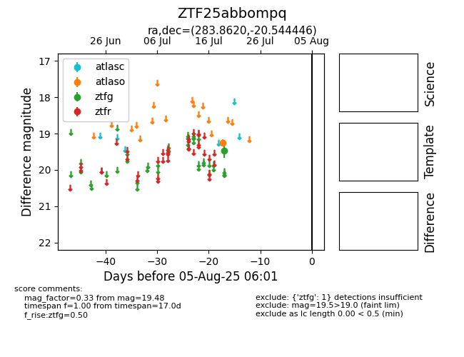

Target ZTF25abbompq at 2025-08-05 06:01, see:
FINK: fink-portal.org/ZTF25abbompq
Lasair: lasair-ztf.lsst.ac.uk/objects/ZTF25abbompq
ALeRCE: alerce.online/object/ZTF25abbompq
alt names
ZTF25abbompq (ztf,fink)
coordinates:
equatorial (ra, dec) = (283.8620,-20.54445)
galactic (l, b) = (14.8961,-10.05543)
photometry
last atlaso=19.24, ztfg=19.48
1 atlaso, 1 ztfg detections
